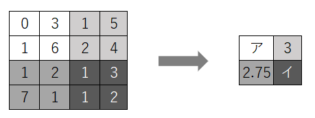

59.以下のフィルタＦと画像Ｐによる畳み込み演算を行い、特徴マップの空欄に当てはまる数値を選べ。
ただしストライドは2とする。

|
A. 1.75 B. 2 C. 2.5 D. 2.75 E. 3 F. 3.25 G. 3.5 |
答え Ｃ、Ａ
【解説】
| プーリング演算はプーリング層にて行われ、特徴マップの情報をサンプリングし、 大まかに画像の特徴を捉えるために行われる処理を指します。 この場合は平均プーリングですので、特徴マップの各領域での画素値の平均を計算し、 プーリング演算の結果とすれば答えが出ます。 また、最大プーリングについて問われたら、「各領域の画素値の最大値」をプーリング 結果としましょう。 （ア）＝（0+3+1+6）÷4＝2.5（ア＝Ｃ） （イ）＝（1+3+1+2）÷4＝1.75（イ＝Ａ） |
 戻る
戻る 一覧へ
一覧へ